Cathédrale Notre-Dame de Coutances · comparison pass 3
Left: the reference photo. Middle: the model from the same viewpoint. Right: the photo laid over the model at half strength. Write what differs in evidence.comparisons.
ref 0 · west, the front from the parvis (Xfigpower, 2011, CC BY-SA 3.0) · 272.8°, -18.1°
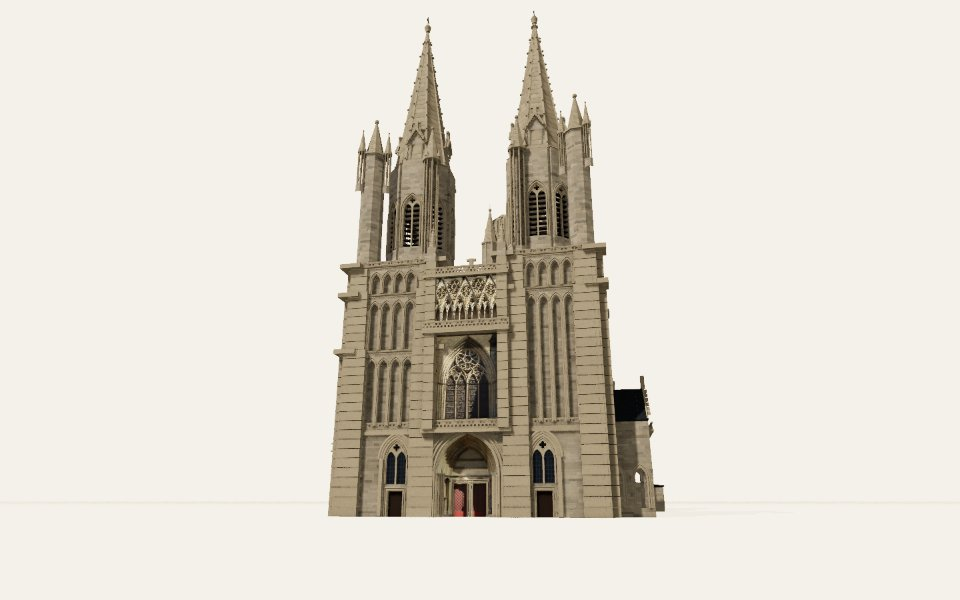
ref 1 · east, the chevet from the lawn behind it (Ikmo-ned, 2008, CC BY-SA 3.0) · 106.3°, -14.7°
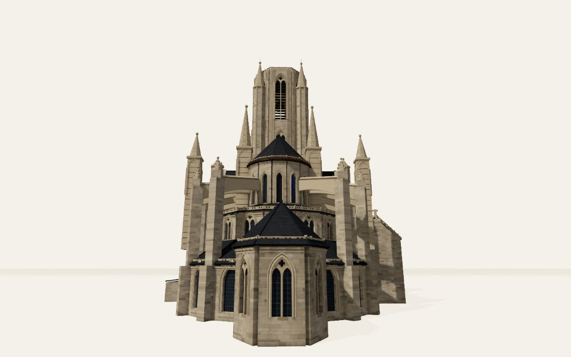
ref 2 · north-east, the chevet and the north side (cowbridgeguide.co.uk, 2014, CC BY 3.0) · 78.3°, -13.7°
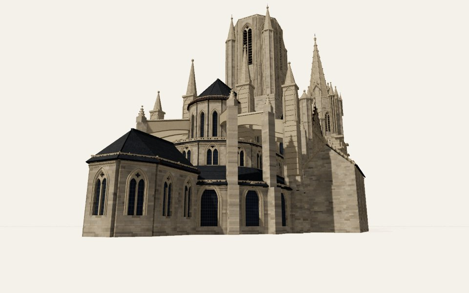
ref 3 · south, the nave chapels and the towers (Giogo, CC BY-SA 3.0) · 151.8°, -25.9°
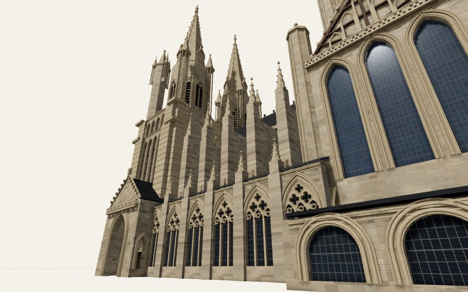
ref 4 · south, the south transept and its great windows (GO69, CC BY-SA 4.0) · 192.7°, -28.4°
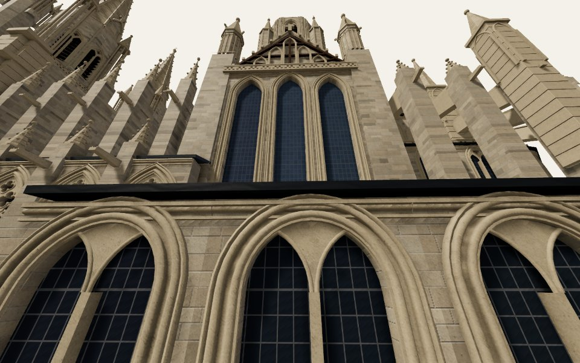
The end of every phase
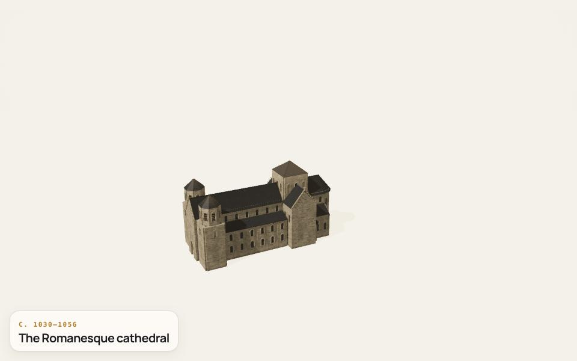
c. 1030–1056 · The Romanesque cathedral
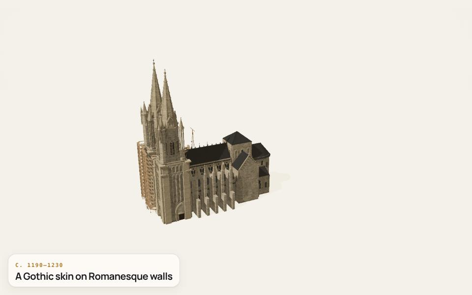
c. 1190–1230 · A Gothic skin on Romanesque walls
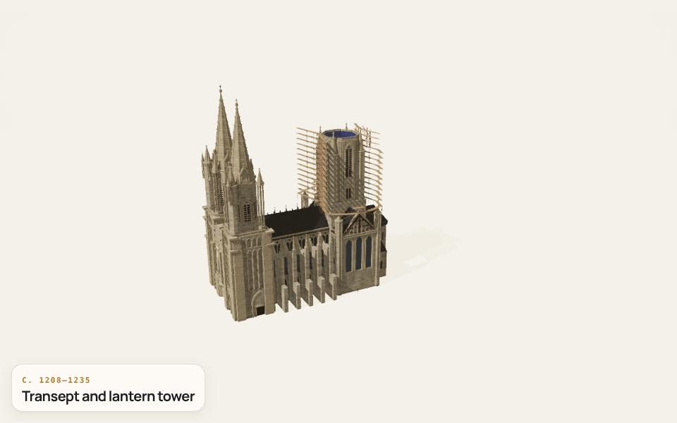
c. 1208–1235 · Transept and lantern tower
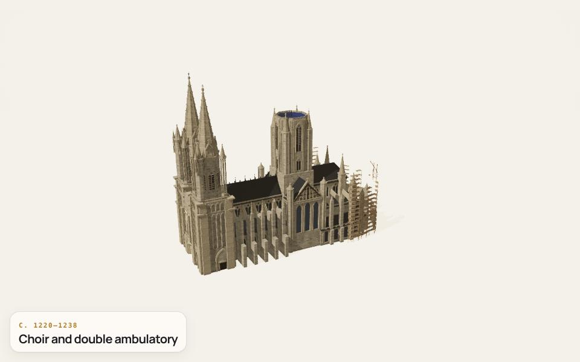
c. 1220–1238 · Choir and double ambulatory
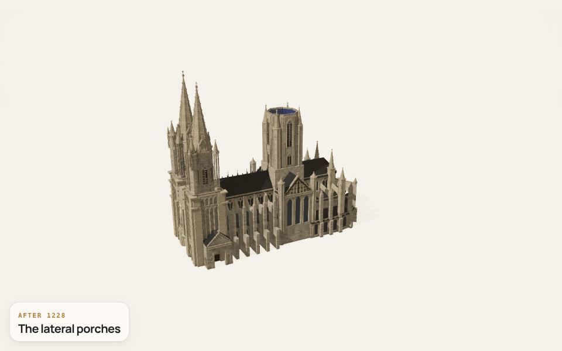
after 1228 · The lateral porches
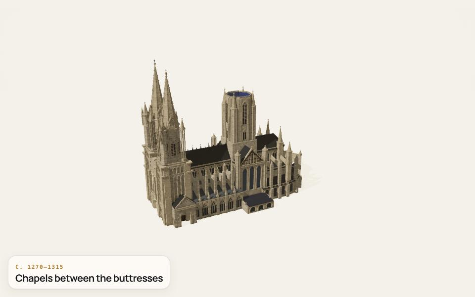
c. 1270–1315 · Chapels between the buttresses1371–1386 · Sylvestre de La Cervelle1800–1812 · Organ and high altar
.jpg?width=900)

.jpg?width=900)